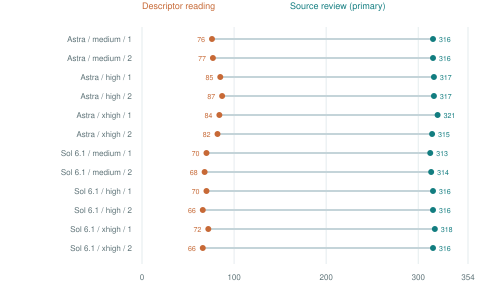
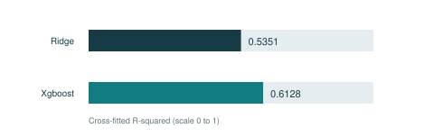
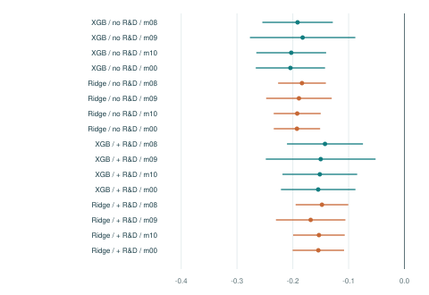

READING GUIDE
Narrative-Behavior Measurement
Full results | CEO speech, R&D prediction and dividend policy | 31 October 2026
This report brings together the existing empirical results for all four steps. It preserves the supplied scientific specification and distinguishes reported findings, archived evidence and unresolved questions. It is a results publication; the companion replication package documents computational reruns.
The central score is text-predicted R&D divided by assets. It is a candidate behavioral proxy. Predictive fit and regression significance alone do not establish that it measures psychological risk preference.
| Step | What is reported |
|---|
| 1. Represent | 354 topics; original descriptions, training metadata and catalogue |
| 2. Screen | 12 trials, 36 readers; both stages, missingness and recoveries |
| 3. Predict | 29,506 firm-year scores; Ridge/XGBoost and six robustness runs |
| 4. Assess | 25 downstream models, including 16 score specifications |
Read the report first. Then open the step folders for full CSV/JSON outputs and original Excel workbooks. Every retained result is indexed with a SHA-256 fingerprint. The complete results ZIP additionally includes the 3,840-file original reader-evidence archive, already expanded for inspection.
Scope: the completed 21 October screening pilot and empirical packages delivered on 27 October 2026. Earlier design proposals and the 19 October pilot are not substituted for this completed application.
STEP 1 / REPRESENT
An existing 354-topic representation
The supplied BERTopic model was trained on 887,488 speech components with nonmissing political-donation ideology scores, drawn from a 5,765,638-component 2013-2023 corpus. That historical training sample is not restricted to CEOs.
The saved model contains 354 substantive topics (IDs 0-353), plus outlier class -1. There are 482,860 outlier training components (54.4%). The current application uses 1,775,355 CEO-tagged components and the supplied topic densities.
| Component | Delivered setting or output |
|---|
| Embedding | all-mpnet-base-v2; 768 dimensions |
| UMAP | 15 neighbors; 5 dimensions; cosine; random_state 42 |
| HDBSCAN | min_cluster_size 120; min_samples 100; eom |
| Topic descriptors | Names, sizes, keywords, representatives; Excel and CSV |
| Model artifacts | topics.json and configuration retained in this results package |
The safetensors save does not preserve the fitted UMAP and HDBSCAN objects. A new training run can produce a different topic system; it is not a way to recover missing historical ordering evidence.
The historical density matrix has no embedded row identities or model/column fingerprint. Its ordering remains delivery-declared. Text joins and subsequent input checks should not be described as independent authentication of that historical matrix.
STEP 2 / SCREEN
Source review changes the selection
Twelve P0 trials cross two requested model families, three effort settings and two repetitions. Each trial has three readers. Stage A uses descriptors; Stage B continues each reader through source review. An unweighted two-of-three majority determines selection.
Stage A selected 66-87 topics per trial. Stage B selected 313-321. The figure shows the primary first-attempt results; the growth is sensitivity to the reading procedure, not an accuracy estimate.

| Requested model / effort / repetition | Stage A | Stage B | Unresolved |
|---|
| Astra / medium / 1 | 76 | 316 | 0 |
| Astra / medium / 2 | 77 | 316 | 0 |
| Astra / high / 1 | 85 | 317 | 0 |
| Astra / high / 2 | 87 | 317 | 0 |
| Astra / xhigh / 1 | 84 | 321 | 0 |
| Astra / xhigh / 2 | 82 | 315 | 1 |
| Sol 6.1 / medium / 1 | 70 | 313 | 0 |
| Sol 6.1 / medium / 2 | 68 | 314 | 0 |
| Sol 6.1 / high / 1 | 70 | 316 | 0 |
| Sol 6.1 / high / 2 | 66 | 316 | 0 |
| Sol 6.1 / xhigh / 1 | 72 | 318 | 0 |
| Sol 6.1 / xhigh / 2 | 66 | 316 | 0 |
STEP 2 / EVIDENCE
Keep missingness and minority reasons visible
The primary analysis retains first saves. Six malformed or failed page saves across five readers leave 120 Stage B rows absent. There are 12,624 observed Stage B topic rows out of 12,744. Supplementary recovery records fill the roster without replacing the primary analysis.
Across 4,248 trial-topic decisions, primary totals are 3,795 relevant, 452 irrelevant and one unresolved. Supplementary totals are 3,796, 452 and zero unresolved. The unresolved primary case is topic 224 in repetition 2, Astra Xhigh.
Among 4,247 jointly resolved Stage A-to-B majority comparisons, 2,964 change (69.79%): 2,928 irrelevant-to-relevant and 36 relevant-to-irrelevant. There are 306 topics always selected, 31 always excluded and 17 that vary in the primary Stage B outputs.
| Evidence or qualification | Retained result |
|---|
| Primary complete Stage B rosters | 31 of 36 readers |
| Primary mechanical flags | 62 (coverage, quotation, keyword and roster flags) |
| Supplementary mechanical flags | 12; diagnostics are not semantic error counts |
| Recoveries | 51 recovery pairs; 52 supplementary page attempts |
| Scope | 12 P0 trials ratified after collection; no winning classifier established |
The delivered Step 3 input uses primary b1-gpt-6-astra-P0-xhigh: 321 selected, 33 excluded and none unresolved. This identifies the analysis actually supplied; it does not establish superiority over the other trials.
The browser exposes all reader reasons, confidence explanations, quotations and missing rows. The full archive also preserves literal attempts, seals, provenance, recoveries and the documented protocol deviation.
STEP 3 / PREDICT
Text predicts R&D intensity
The model uses 321 selected topic features and one aggregate sentiment feature. Topic features receive a centered log-ratio transformation and standardization. Firm-CEO connected components define grouped five-fold cross-fitting.
The panel contains 29,506 firm-years, 4,517 firms and 6,933 CEOs over 2013-2023. Targets are available for 29,191 rows. Missing R&D is set to zero when assets are positive; 42.7% of available targets arise from this zero-fill rule. The other 315 rows lack a target because assets are missing or nonpositive.

| Delivered metric | Ridge | XGBoost |
|---|
| Cross-fitted R-squared | 0.5351 | 0.6128 |
| Mean squared error | 0.006006 | 0.005001 |
| Correlation with target | 0.7315 | 0.7829 |
The reported tuning choices are Ridge alpha = 1,000 and XGBoost max_depth = 6. Evaluation uses the delivered target-available rows and winsorization convention. Per-fold counts, settings and bounds are retained in metrics.json.
The score files contain out-of-fold and full-sample fitted versions plus clipped, percentile and standardized transformations. Downstream analysis uses out-of-fold scores. No industry, size or year controls enter this prediction model. This specification differs from the earlier proposed scalar N followed by f(N, controls).
STEP 3 / ROBUSTNESS
The supplied small-training-sample checks
The delivered robustness exercise uses three random seeds. Each seed forms a grouped 20% training / 20% validation / 60% test split. Hyperparameters are selected on the validation set; test results are compared with the supplied out-of-fold scores on the same rows and target convention.
These six runs describe sensitivity to the supplied split design and training size. They are not six independent validations of psychological meaning.
| Seed | Model | Training N | Test N | Test R-sq | OOF comparison R-sq |
|---|
| 1 | ridge | 5833 | 17499 | 0.5057 | 0.5315 |
| 1 | xgboost | 5833 | 17499 | 0.5788 | 0.6086 |
| 2 | ridge | 5890 | 17600 | 0.4960 | 0.5209 |
| 2 | xgboost | 5890 | 17600 | 0.5661 | 0.5959 |
| 3 | ridge | 5819 | 17444 | 0.5183 | 0.5365 |
| 3 | xgboost | 5819 | 17444 | 0.5824 | 0.6106 |
The table reproduces the saved metrics without retraining. Training and test counts, selected hyperparameters, correlations, MSE, training fit and validation fit remain in the complete CSV. The OOF comparison uses models trained on approximately 80% of the available data and is not an equal-training-size benchmark.
STEP 4 / ASSESS
Dividend associations are consistently negative
Strict company, person and timing matching yields 2,967 input observations across 600 firms, from an eligible pool of 7,086 firm-years. Ordinary score models retain 2,927 observations across 591 firms after removing industry groups that perfectly predict dividend status. The positive-relative-leverage specification uses 1,653 observations across 340 firms.
Pooled Logit models include separate industry and year effects and company-clustered standard errors. Score = 100 x max(out-of-fold predicted R&D/assets, 0). Four specifications per algorithm, with and without actual R&D controls, give 16 score models. All supplied score coefficients are negative with clustered p < .01.

Dots show coefficients; lines show 95% Wald intervals (coefficient +/- 1.96 x company-clustered SE). Labels m00, m08, m09 and m10 refer to the supplied specifications. XGB denotes XGBoost.
For XGBoost m08 with actual R&D controls, the coefficient is about -0.1423 (SE 0.0347), implying an odds ratio near 0.867 per one-percentage-point increase in the score. This is a conditional log-odds association, not a probability-point change or causal effect.
STEP 4 / COMPLETE INVENTORY
All 25 supplied model specifications
This inventory includes the nine baseline/replication specifications and all 16 score specifications. The original five-sheet workbook, full tables, estimates and used-sample records accompany the report. The table gives score coefficients only; full control and fixed-effect coefficients are retained in the coefficient CSV.
| Model ID | N used | Firms | Score coef | Clustered SE |
|---|
| rep_original_2006_2011_m08 | 5736 | 1424 | See full table | - |
| rep_original_2006_2011_m09 | 3416 | 850 | See full table | - |
| rep_original_2006_2011_m10 | 5736 | 1424 | See full table | - |
| rep_extended_2006_2023_m08 | 13716 | 1793 | See full table | - |
| rep_extended_2006_2023_m09 | 7784 | 1055 | See full table | - |
| rep_extended_2006_2023_m10 | 13716 | 1793 | See full table | - |
| rep_2013_2023_m08 | 7035 | 1304 | See full table | - |
| rep_2013_2023_m09 | 3782 | 728 | See full table | - |
| rep_2013_2023_m10 | 7035 | 1304 | See full table | - |
| score_xgboost_no_rd_m08 | 2927 | 591 | -0.1915 | 0.0322 |
| score_xgboost_no_rd_m09 | 1653 | 340 | -0.1824 | 0.0482 |
| score_xgboost_no_rd_m10 | 2927 | 591 | -0.2028 | 0.0319 |
| score_xgboost_no_rd_m00 | 2927 | 591 | -0.2043 | 0.0317 |
| score_ridge_no_rd_m08 | 2927 | 591 | -0.1836 | 0.0218 |
| score_ridge_no_rd_m09 | 1653 | 340 | -0.1890 | 0.0300 |
| score_ridge_no_rd_m10 | 2927 | 591 | -0.1921 | 0.0215 |
| score_ridge_no_rd_m00 | 2927 | 591 | -0.1926 | 0.0212 |
| score_xgboost_with_rd_m08 | 2927 | 591 | -0.1423 | 0.0347 |
| score_xgboost_with_rd_m09 | 1653 | 340 | -0.1501 | 0.0502 |
| score_xgboost_with_rd_m10 | 2927 | 591 | -0.1516 | 0.0342 |
| score_xgboost_with_rd_m00 | 2927 | 591 | -0.1545 | 0.0341 |
| score_ridge_with_rd_m08 | 2927 | 591 | -0.1478 | 0.0241 |
| score_ridge_with_rd_m09 | 1653 | 340 | -0.1680 | 0.0317 |
| score_ridge_with_rd_m10 | 2927 | 591 | -0.1532 | 0.0236 |
| score_ridge_with_rd_m00 | 2927 | 591 | -0.1542 | 0.0235 |
INTERPRETATION & FILE GUIDE
What the results establish, and what remains open
The supplied application connects a recorded topic-selection procedure, grouped prediction of a behavioral target, and a completed dividend analysis. The evidence supports those computational and associational descriptions.
Psychological meaning remains a research question. The score may reflect industry, opportunity sets, firm resources and disclosure practices as well as risk preference. Human-reference screening accuracy and a separate N/B/S construct-validation comparison are not established.
Interpretation also depends on historical density alignment, zero-filled R&D, overlap between speech and target timing, topic fitting that included held-out firms' text, and selective downstream matching. Clustered regression standard errors condition on frozen scores; they do not propagate first-stage retraining uncertainty. Related specifications are not independent replications.
| Inspect | Open within the results folder |
|---|
| Report and figures | report.html / report.pdf / figures/ |
| All topics and descriptors | step1/ |
| All 12 trials and all reasons | step2/explorers/index.html |
| Firm-year scores and robustness | step3/results/ |
| All downstream tables and estimates | step4/full/ |
| Original literal reader evidence | reader-evidence/ (complete ZIP only) |
| File identities and source mapping | MANIFEST.json / SOURCES.json |
This report repackages existing findings; it does not claim a new empirical rerun. Newly executed reproduction evidence belongs to the separate replication package. Historical audit files remain explicitly identified as supplied checks.
All files are shared within the private research repository under the source-data access conditions. Original numerical outputs and reader judgments are retained unchanged; figures, navigation and reader browsers are new presentations of those saved outputs.